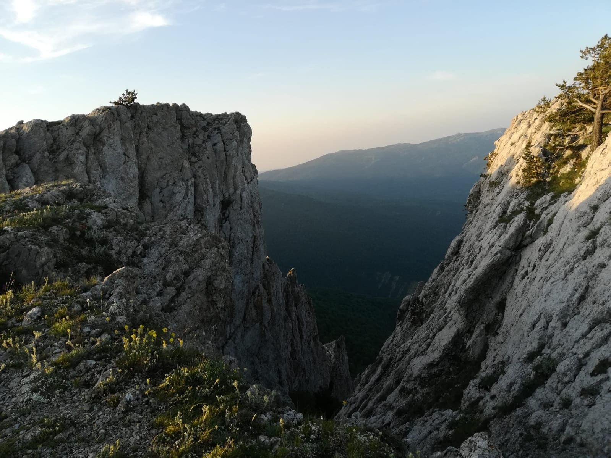
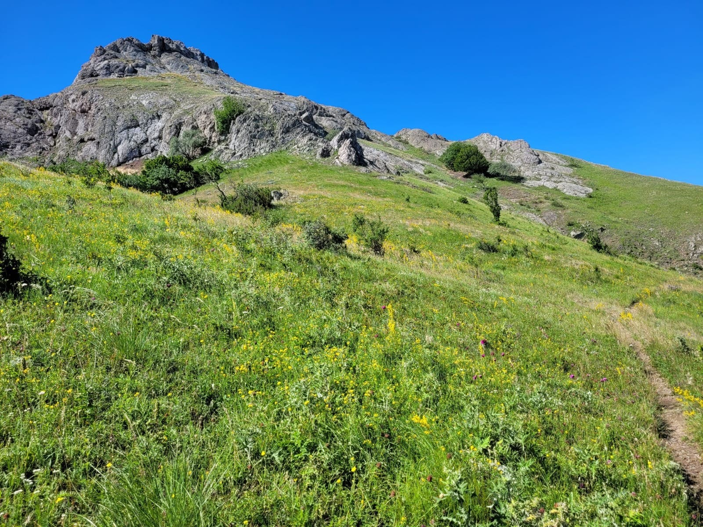

Крым — одно из самых популярных направлений среди туризма.
Сочетая в себе побережья двух морей, горный массив, луговую степь. Более четырехсот водоемов.
Две тысячи рек источников и родников. Исторические места гражданской войны, вилкой отечественной
памятные места Крымской войны. Культурные наследия 19-го века.
Пещера-святилище Кырк-Азиз
Пещера Кырк-Азиз недалеко от
столицы полуострова, возле посёлка Зуя. Пещера набрала популярность ещё
в позапрошлом веке. Когда в ней было принесено в жертву сорок братьев. С тех пор
татары привозили туда больных, оставляя их ночь. Пещера считалась
священным местом и кто там переночует исцелялись.
Сложность маршрута:

Каменные гребни Демерджи
Демерджи — яйла, без преувеличения самая красивая и живописная гора на полуострове.
Она состоит из двух частей - Северная сторона и Южная. Обе они украшены большим количеством
каменных фигур различных форм. Одно из самых популярных склонов считается каменные гребни.
Сложность маршрута:
Красное озеро
Уникальный водоём полуострова. Водоём используется для слива химических отходов.
За счёт этого вода имеет такой необычный цвет. С одной стороны вода красного
цвета с другой бирюзовая, пройдя по дамбе можно наблюдать пересохшие участи водоема которые
впечатляют парниковым эффектом.
Сложность маршрута:

Скала - Филин-Кая
Путешествуя по Зеленогорью Непременно нужно забраться на вершину скалы Филин Кая.
Одна из главных смотровых вершин Полуострова. Подарит приятные впечатления удивляя своими
пейзажами. Открывающийся вид завораживает в любую погоду. Можно
насладиться атмосферой Крымских гор и
водопадами.